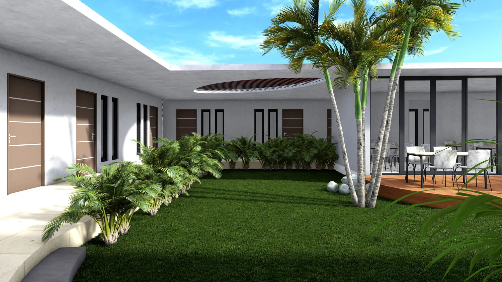
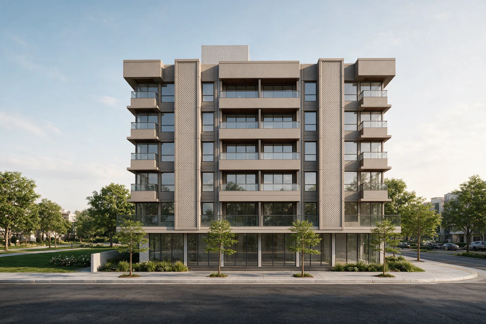
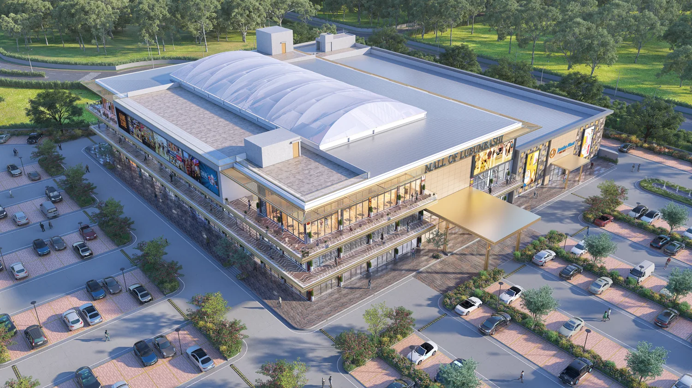
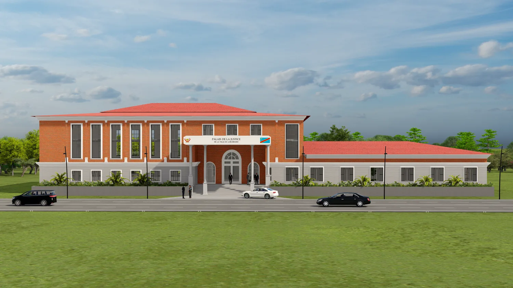
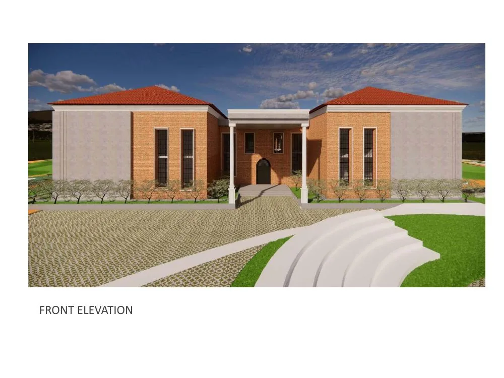
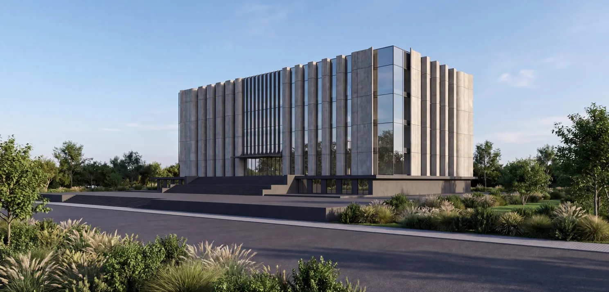

PROJECT VISUAL / 01
PROJECT VISUAL / 01RESIDENTIAL DEVELOPMENT
Golf Villa
Golf villa concept imagery supplied by AID; project details and status to confirm.
View project brief ↗Explore project visuals supplied by AID across residential, commercial and institutional development, alongside the separately identified upcoming-project pipeline. Project status, scope and metadata will be confirmed before publication.
Figure stated in proposal; confirm before launch.
The client has shared eight project image collections. They are presented here as visual references—not as claims that each project is completed or currently underway.
Any image shown for an upcoming project must be an approved render or clearly labelled illustrative reference.
Enquire about this project ↗Browse the visual collections shared by the client. This structure can later be expanded with approved project descriptions, locations, scope, dates and delivery status.
PROJECT VISUAL / 01Golf villa concept imagery supplied by AID; project details and status to confirm.
View project brief ↗
PROJECT VISUAL / 02Guest-house imagery supplied by AID; project details and status to confirm.
View project brief ↗
PROJECT VISUAL / 03Residential tower imagery supplied by AID; project details and status to confirm.
View project brief ↗
PROJECT VISUAL / 04The proposal lists this as a 20,000 sqm upcoming development; current status and approved project details require confirmation.
View project brief ↗ PROJECT VISUAL / 05
PROJECT VISUAL / 05Hospital imagery supplied by AID; project details and status to confirm.
View project brief ↗
PROJECT VISUAL / 06Courthouse imagery supplied by AID; project details and status to confirm.
View project brief ↗
PROJECT VISUAL / 07School material was supplied as a PDF; project details and status to confirm.
View project brief ↗
PROJECT VISUAL / 08The proposal lists a University Campus of 18,000 sqm as an upcoming development; current status and approved project details require confirmation.
View project brief ↗Important: these are client-provided project visuals. The website should not imply completion, ownership, delivery dates, location or scope beyond information AID has approved.
The proposal names two upcoming developments. Their status, approved concept visuals, timeline and enquiry routing require confirmation.
20,000 sqm proposed mixed-use retail and leisure destination. Concept, tenant mix and timeline to be confirmed.
View project brief ↗Project enquiry ↗18,000 sqm proposed educational campus. Location, programme and timeline to be confirmed.
View project brief ↗Project enquiry ↗Try another project name or select a different filter.
Tell us about the scope, location and outcomes you are working toward.